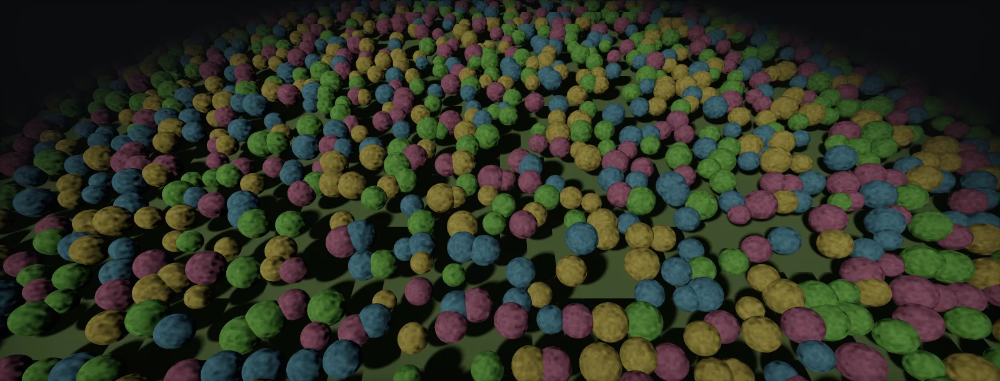

Foliage Rendering and Instancing
Rendering thousands of plants: draw calls per pass, GPU instancing and per-instance data, GPU-driven indirect drawing, culling, placement with terrain systems and procedural rules, and a profiling routine, built with the GPU Resident Drawer and a chunked instanced renderer in Unity HDRP and with the Foliage tool, Landscape Grass, PCG and Nanite in Unreal.

A forest is a draw-call problem
Every draw call costs CPU time to validate and submit, and foliage multiplies draws in every direction: plant types × instances × materials × passes. Drawn one object at a time, a modest forest already costs more CPU time than the whole frame budget:
| Method | What it saves | Fits foliage? |
|---|---|---|
| SRP Batcher (Unity) | State changes between draws with the same shader variant; still one draw per object | Helps everything, does not reduce the draw count |
| Static batching | Merges static meshes into big buffers | No for wind foliage: it changes object space (pivots break) and costs memory per copy |
| GPU instancing | One draw for many copies of one mesh and material | Yes: the standard for foliage |
| GPU-driven / indirect (BatchRendererGroup, GPU Resident Drawer, RenderMeshIndirect; Unreal HISM and Nanite) | CPU culling and submission; the GPU culls and writes draw arguments | Yes, for large counts |
GPU instancing and per-instance data
Instancing draws one mesh many times in one call. The shader reads each copy's data, at least a transform, from a buffer indexed by the instance ID. Everything else in the draw is shared: mesh, material, textures. That is why variation per instance must come from that small block of data or from a hash of the position, not from separate materials:
Classic instancing APIs pass the instance data in constant buffers with a size limit (Unity's classic Graphics.DrawMeshInstanced takes at most 1023 per call, and terrain details draw in batches of up to 1023). Structured buffers remove the limit (structured buffers). Unity's SRP Batcher and per-object material property blocks interact: a material property block on an instanced renderer can break batching, so per-instance values belong in instance data or are derived in the shader.
GPU-driven rendering
With hundreds of thousands of instances, even deciding what to draw is too slow on the CPU. GPU-driven rendering moves it to a compute pass: test every instance against the frustum, distance and occlusion, append the visible ones to a list (append buffers), write the instance count into an arguments buffer, and issue an indirect draw whose size the CPU never learns:
Engines package this. Unity 6's GPU Resident Drawer collects ordinary MeshRenderers into BatchRendererGroup batches with GPU instancing and adds GPU occlusion culling; it needs Forward+ in URP, works in HDRP, and helps most in large scenes where many objects share a mesh. For custom systems, Graphics.RenderMeshIndirect with a compute culling pass is the building block (dispatch from C#). Unreal's foliage uses Hierarchical Instanced Static Meshes, and Nanite does the culling per cluster on the GPU.
Culling
The cheapest instance is one that is never drawn. Four culls, in order of payoff for foliage:
- Distance per type: grass at tens of metres, bushes further, trees at the horizon. The count falls with the square of the distance.
- Frustum: bounds per instance or per cell of instances, enlarged by the wind sway. Shadow passes use the light's frustum and need casters outside the camera view.
- Occlusion: terrain and buildings hide much of a forest. GPU occlusion against the previous frame's depth (Unity 6 GPU occlusion culling, Unreal's hierarchical Z) suits instances well.
- Screen size: below a few pixels, drop or fade the instance (the LOD Group's culled threshold, Unreal's cull distances).
Placing foliage
Foliage placement is rules over a terrain: density from a mask, exclusion around roads and buildings, slope and height limits, minimum spacing between plants, and variation in scale and rotation. A minimum spacing caps the density:
- Unity terrain: Trees (painted instances with LOD and billboards) and Details (grass and small meshes). Use the Instanced Mesh detail mode with an instancing-capable shader: it is Unity's recommended mode, works in every render pipeline, draws in batches of up to 1023, and leaves colour variation to your shader.
- Unreal: the Foliage mode paints instanced foliage types; Landscape Grass Types spawn grass from landscape layers around the camera at runtime; PCG graphs place everything else procedurally.
- Houdini or custom tools bake placements into instance data per world cell, streamed with the level.
Store trees and large plants; generate dense ground cover around the camera at runtime from the same masks. Storing millions of grass instances per square kilometre costs memory and streaming for something that is only visible within a few tens of metres.
Profiling a forest
Work through the questions in order; each answer tells you which unit to open next:
| Question | Unity | Unreal |
|---|---|---|
| How many draws and batches does foliage cost? | Frame Debugger, Rendering Debugger statistics | stat rhi, stat foliage, Unreal Insights |
| Is the cost CPU (submission) or GPU? | Profiler: render thread against GPU time | stat unit |
| Which pass is expensive: shadows, prepass, main? | GPU profiler markers, RenderDoc | stat gpu, ProfileGPU |
| Overdraw and shading cost on crowns | Rendering Debugger: Quad Overdraw | Quad Overdraw and Shader Complexity views |
| Vertex cost of wind | Toggle wind off in the material and compare | World Position Offset disable distance 0 and compare |
CPU-bound: fewer types and materials, instancing or GPU-driven drawing, shorter cull distances. GPU-bound in the main pass: overdraw (cards) or LODs (chains). GPU-bound in shadows: shadow casters (shadows). Vertex-bound: wind and LOD triangle counts (wind cost).
Build it in Unity HDRP
Three layers of the same idea in HDRP: the GPU Resident Drawer for ordinary MeshRenderers (trees placed as prefabs), terrain details in Instanced Mesh mode for grass, and a small chunked renderer for dense plants that should not exist as GameObjects at all. Written for Unity 6 with HDRP 17; Unity 2022 LTS works the same apart from a few renamed menu entries.
- GPU Resident Drawer. In Project Settings > Graphics, set BatchRendererGroup Variants to Keep All. In the HDRP Asset, under Rendering, set the GPU Resident Drawer to Instanced Drawing and enable GPU occlusion culling if your version offers it. In Player Settings, turn Static Batching off. Ordinary MeshRenderers with instancing-compatible materials are now drawn as instanced batches.
- Check with the Frame Debugger: tree prefabs of one type should appear as a handful of instanced draws per LOD, material and pass. MaterialPropertyBlocks or per-object material copies break that grouping; move variation into the shader.
- Grass. On the terrain, add details with Add Detail Mesh, enable Use GPU Instancing (the Instanced Mesh mode) with an instancing-capable Shader Graph material. Colour variation must come from the shader (a hash of the world position), because the Healthy/Dry colours are not applied in this mode. Set Detail Distance and density in the terrain settings.
- Dense custom foliage. Add
FoliageChunkRenderer.csto an empty GameObject, assign the terrain, the LOD meshes with their distances and an instanced material, then Rebuild from the component's context menu. It scatters on a jittered grid, skips steep slopes, and draws visible chunks withGraphics.RenderMeshInstanced, choosing one LOD per chunk. - Profile: compare CPU render-thread time and GPU time with the GPU Resident Drawer on and off, and with the chunk renderer's cull distance halved. Shadows from plants outside the view are culled by this simple renderer; extend the cull test with the light's frustum if they matter.
// Assets/Scripts/FoliageChunkRenderer.cs: scatters one plant type over a terrain in chunks and draws it
// with GPU instancing: chunk-level frustum and distance culling, one LOD per chunk, no GameObjects.
// The material must have "Enable GPU Instancing" ticked.
using System.Collections.Generic;
using UnityEngine;
using UnityEngine.Rendering;
[ExecuteAlways]
public class FoliageChunkRenderer : MonoBehaviour
{
[System.Serializable] public class Lod { public Mesh mesh; public float maxDistance = 30f; }
public Lod[] lods; // LOD0 first; the last one is used up to cullDistance
public Material material;
public ShadowCastingMode shadows = ShadowCastingMode.Off;
public Terrain terrain;
public int seed = 1;
public float spacing = 1.5f; // metres between candidate positions (jittered grid)
public float maxSlope = 35f; // degrees
public float chunkSize = 16f;
public Vector2 scaleRange = new(0.8f, 1.2f);
public float cullDistance = 120f;
public float swayMargin = 1f; // bounds padding for wind
class Chunk { public Bounds bounds; public Matrix4x4[] m; }
readonly List<Chunk> chunks = new();
readonly Plane[] planes = new Plane[6];
void OnEnable() { Build(); RenderPipelineManager.beginCameraRendering += Draw; }
void OnDisable() { RenderPipelineManager.beginCameraRendering -= Draw; }
[ContextMenu("Rebuild")]
public void Build()
{
chunks.Clear();
if (terrain == null) return;
var td = terrain.terrainData; var origin = terrain.transform.position; var rnd = new System.Random(seed);
int nx = Mathf.CeilToInt(td.size.x / chunkSize), nz = Mathf.CeilToInt(td.size.z / chunkSize);
for (int cz = 0; cz < nz; cz++)
for (int cx = 0; cx < nx; cx++)
{
var list = new List<Matrix4x4>(); var b = new Bounds(); bool first = true;
for (float z = cz * chunkSize; z < (cz + 1) * chunkSize; z += spacing)
for (float x = cx * chunkSize; x < (cx + 1) * chunkSize; x += spacing)
{
float jx = x + (float)rnd.NextDouble() * spacing * 0.8f, jz = z + (float)rnd.NextDouble() * spacing * 0.8f;
float u = jx / td.size.x, v = jz / td.size.z;
if (u > 1f || v > 1f || td.GetSteepness(u, v) > maxSlope) continue;
var p = origin + new Vector3(jx, td.GetInterpolatedHeight(u, v), jz);
float s = Mathf.Lerp(scaleRange.x, scaleRange.y, (float)rnd.NextDouble());
list.Add(Matrix4x4.TRS(p, Quaternion.Euler(0f, (float)rnd.NextDouble() * 360f, 0f), Vector3.one * s));
var pb = new Bounds(p + Vector3.up * s, Vector3.one * (2f * s + swayMargin));
if (first) { b = pb; first = false; } else b.Encapsulate(pb);
}
if (list.Count > 0) chunks.Add(new Chunk { bounds = b, m = list.ToArray() });
}
}
void Draw(ScriptableRenderContext ctx, Camera cam)
{
if (material == null || lods == null || lods.Length == 0) return;
GeometryUtility.CalculateFrustumPlanes(cam, planes);
var cp = cam.transform.position;
foreach (var c in chunks)
{
float d = Mathf.Sqrt(c.bounds.SqrDistance(cp));
if (d > cullDistance || !GeometryUtility.TestPlanesAABB(planes, c.bounds)) continue; // shadows outside the view are skipped too
int li = 0; while (li < lods.Length - 1 && d > lods[li].maxDistance) li++;
var rp = new RenderParams(material)
{
camera = cam, worldBounds = c.bounds, shadowCastingMode = shadows, receiveShadows = true,
layer = gameObject.layer, motionVectorMode = MotionVectorGenerationMode.Camera // static instances: camera motion only
};
for (int start = 0; start < c.m.Length; start += 1023)
Graphics.RenderMeshInstanced(rp, lods[li].mesh, 0, c.m, Mathf.Min(1023, c.m.Length - start), start);
}
}
}Next step for very large counts: move the culling into a compute shader that appends visible instances to a buffer and draws with Graphics.RenderMeshIndirect, reading transforms from a StructuredBuffer in the shader. That needs procedural instancing setup in the shader; the GPU Resident Drawer is the built-in alternative.
Build it in Unreal Engine
Unreal instances foliage by default: the Foliage mode creates Hierarchical Instanced Static Mesh components, Landscape Grass Types generate grass around the camera, and PCG places everything procedurally. Nanite moves culling and LOD to the GPU. Written for Unreal Engine 5.6 and later. Substrate is production-ready from 5.7; check Project Settings > Rendering > Substrate to see which material model a project uses.
- Foliage mode. Add foliage types for each mesh; set Density, Radius (minimum spacing), scale and rotation ranges, slope and height limits, Cull Distance, Cast Shadow and World Position Offset Disable Distance. Painted instances land in HISM components per type and level cell.
- Grass. Create a Landscape Grass Type with grass meshes, density and cull distances, and connect it to a Landscape Grass Output node in the landscape material, driven by the layer weights. The engine generates the instances around the camera at runtime, so they cost no stored data.
- PCG. Add a PCG Volume, sample the landscape surface, filter by slope, height and masks, apply a self-pruning or distance filter for spacing, and spawn with a Static Mesh Spawner (instanced output). Regenerate per partition cell with World Partition.
- Nanite. Opaque, modelled foliage can be Nanite: GPU culling per cluster, no LOD chain. Masked materials and World Position Offset work but cost more under Nanite; the experimental Nanite Foliage path addresses both.
- Profile with
stat unit,stat rhi,stat foliageandProfileGPU; compare with foliage hidden through the show flags (ShowFlag.InstancedFoliage 0,ShowFlag.InstancedGrass 0) to get its total cost.
Sources and further reading
The formulas and engine details in this unit come from these references. Engine documentation changes between versions.
- DocsGPU Resident DrawerUnityRequirements, settings and limitations.
- DocsGrass and other detailsUnityInstanced Mesh detail mode, batches of 1023, density settings.
- DocsGraphics.RenderMeshIndirectUnityIndirect instanced drawing with arguments from a buffer.
- DocsGraphics.RenderMeshInstancedUnityInstanced drawing from a list of transforms.
- TalkGPU-driven rendering pipelinesUlrich Haar, Sebastian Aaltonen · SIGGRAPH 2015GPU culling and indirect drawing at scale (Assassin's Creed Unity).
- DocsNanite FoliageEpic GamesThe experimental Nanite path for dense foliage.